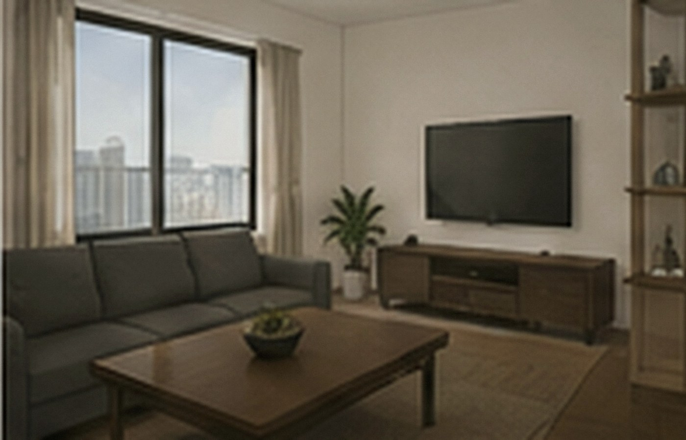
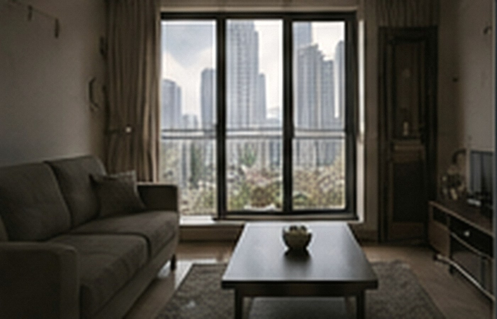
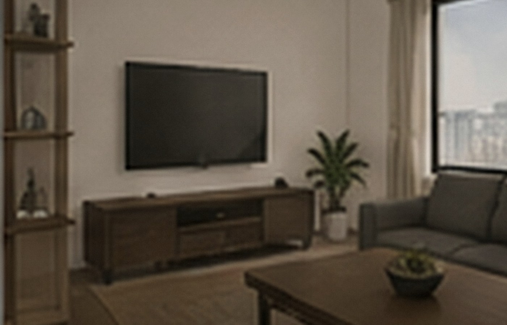

当前房源统计
A栋公开租赁资料对应 68 套，B栋对应 69 套。页面显示的是可租、已租与短期待整理的合法住宅单元。

可预约
A栋 1403
52㎡ · 两室一厅 · 东向
¥4,980/月
已租
A栋 0802
34㎡ · 一室一厅 · 东南
¥4,260/月
整理中
B栋 1106
38㎡ · 一室一厅 · 花园向
预计 9 月中旬
已租
B栋 1503
51㎡ · 两室一厅 · 南向
¥5,180/月租赁说明
押金
标准押一付一；信用签约方案以审核结果为准。
服务费
物业服务费已计入公开租金，不另收公共区域管理费。
宠物
猫、小型犬可申请登记；公共区域需遵守牵引与清洁规则。
退租
按合同约定提前申请，房屋查验后结算水电与押金。
签约与入住流程
确认房源后，租赁顾问会发送标准租赁资料清单。签约前需核对承租人身份、租期、租金支付方式和紧急联系人；如有宠物、长期访客或大件家具搬入计划，也建议在签约前一并登记，避免入住后重复办理。
交房当天由住户与管家共同查验门窗、照明、给排水、空调和现有家具，并抄录水电燃气表底数。一般生活耗材不属于维修范围，公共立管、入户总阀、电气主回路等固定设施由物业按责任边界处理。
费用与日常缴费
公开租金已含基础物业服务费。水、电、燃气按独立计量结算，公共区域照明、电梯和保洁不另行分摊。停车位、储物柜以及经批准的增值保洁属于自选项目，未办理时不会自动计费。
本页面内容最后更新于 2026-08-28